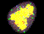
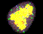
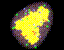
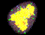

Solvate 1.0 can be obtained as a compressed tar-file from anonymous ftp (ftp.imo.physik.uni-muenchen.de/pub/solvate_1.0/solvate_1.0.tar.Z).
To install it, move the tar-file to your favourite directory and enter:
zcat solvate_1.0.tar.Z | tar -xvf -
The source solvate.c is just one ANSI-C-file without any system-specific stuff (except for malloc() --- RS6000 and NeXT users: pay attention!), so it should compile right away with something like
cc -ansi -O -o solvate solvate.c -lm
It is tested under IRIX System V.4 (SGI), HP-UX, and Digital UNIX V3.2C; appropriate Makefiles are included.
The distribution contains a postscript version of this manual ( docu.ps) as well as an html-version ( html/docu.html with references to all other files in the html-directory).
The distribution also contains two sample-solutes, bpti.pdb/ bpti.psf and globh.pdb/ globh.psf. To check your installation, try:
solvate -t 5.0 -n 2 -ion bpti solbpti
After a while (approx. 10 minutes on a DEC ALPHA/2100)
you should see the following output:
.:::::.. SOLVATE 1.0 (C) 1996 Helmut Grubmueller ::oOOOoo:: Purpose: make a water shell around solutes ::OOO:::: http://www.imo.physik.uni-muenchen.de/~grubi ::::: Helmut.Grubmueller@Physik.uni-muenchen.de Reading solute from file bpti.pdb ... 568 atoms read. Reading atomic charges from file bpti.psf ... total charge is +6.00 e. Calculating bounding sphere ... done. Creating convex volume (max. radius is 100000.000000) ... done. Gauss-sampling convex volume ... done. Approximating volume with 2 gaussians: Phase 1/4...2/4...3/4...4/4...done. Saving parameter for 2 gaussians to file gaussians.lis ... done. Adjusting boundary distance by varying gaussian widths ... 5.046 A Gaussian widths are being scaled by a factor of 1.579210 Saving boundary parameters to file boundary.lis ... done. Creating volume within boundary ... done. Sorting grid points according to distance from solute ... done. Performing distance approximation statistics with 58283 grid points ... 100% Checking approximation for distance from boundary ... 100% Estimated number of water molecules: 2297 Placing water molecules ... found 1692 Grouping water molecules ... 100% The water molecules form 2 groups. Group 1 contains 1691 water molecules Group 2 contains 1 water molecule So we have one single, 0 twins, and 0 triplets Placing ions ... placed 2 sodium ions and 8 chloride ions. Equilibrating ions (2000000 Monte Carlo moves) ... 100% Saving solute, 1682 water molecules, and 10 ions to file solbpti.pdb ... done. Solvate ready. No errors.
{kind=link}